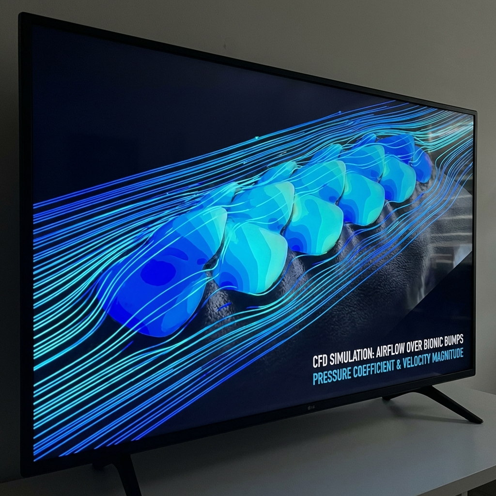
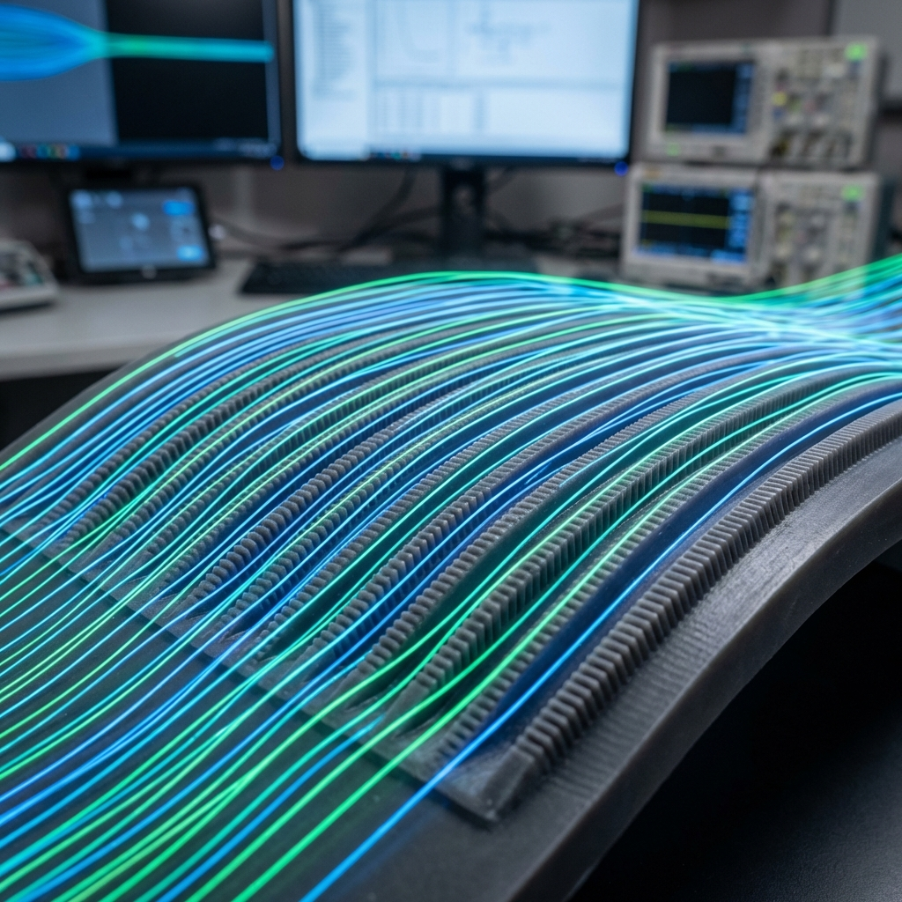
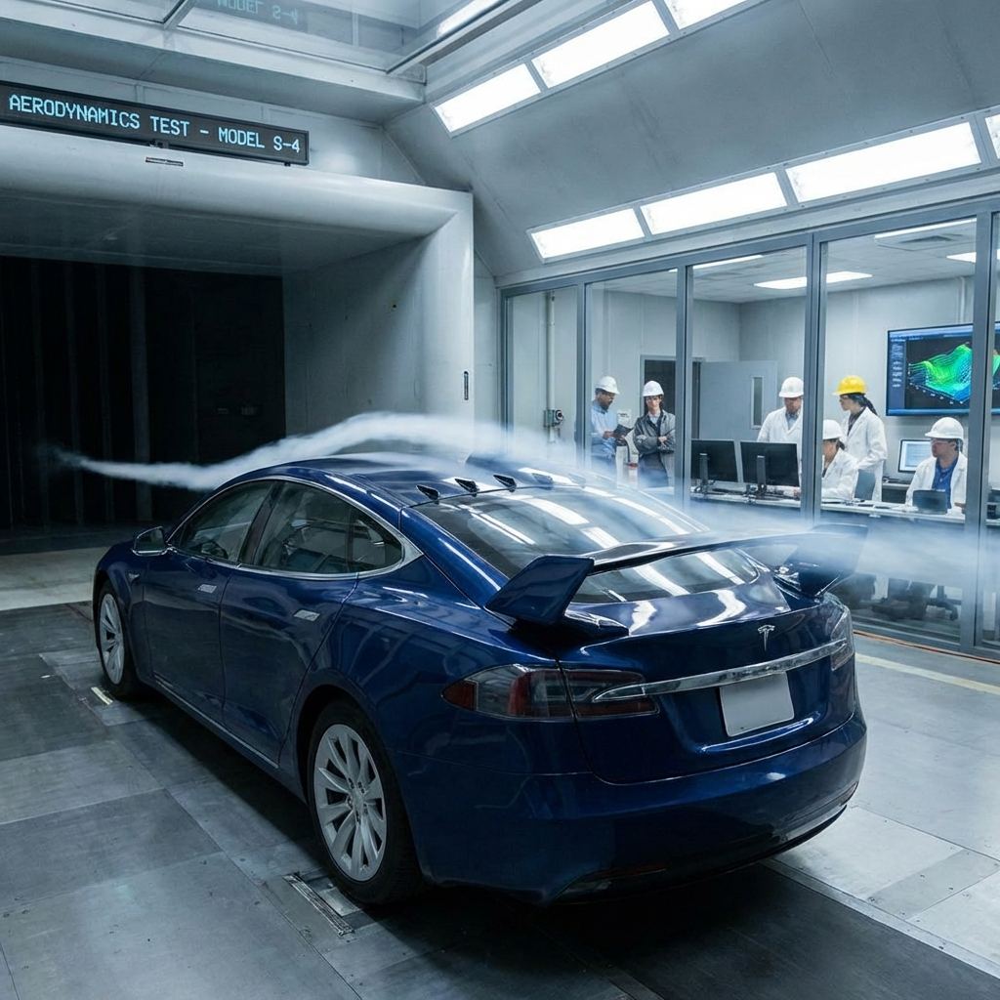
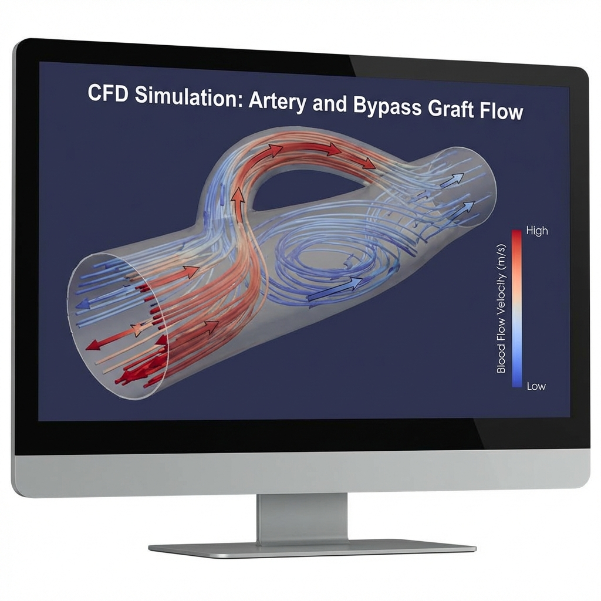
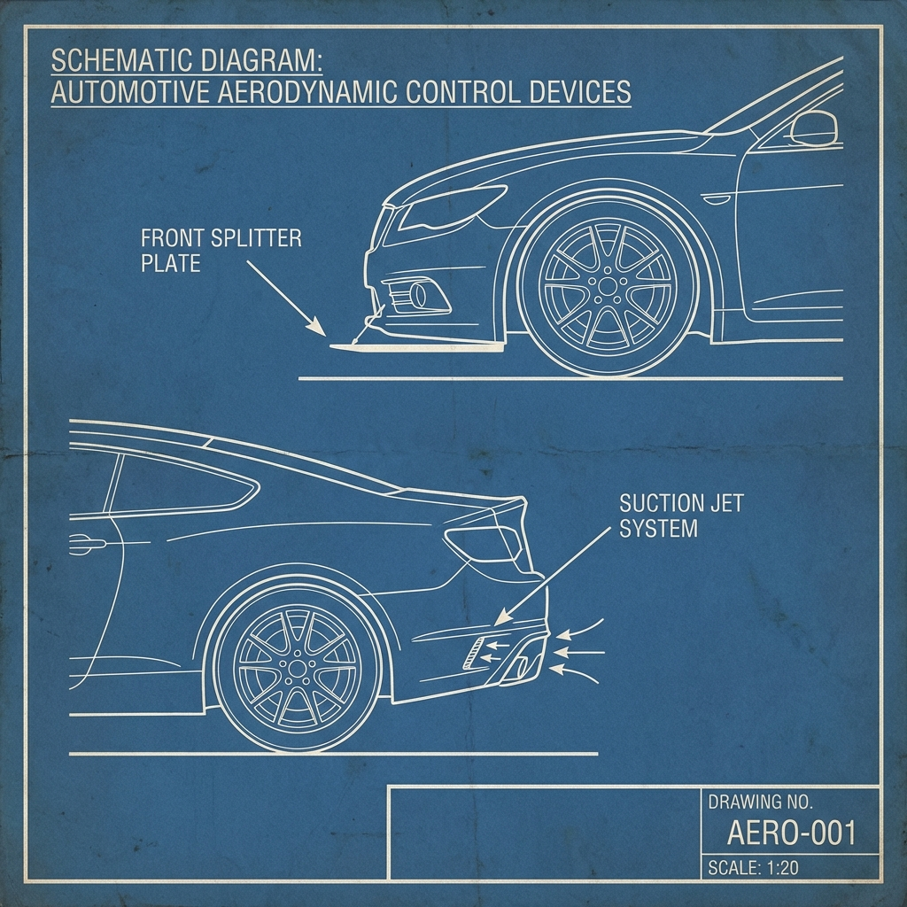
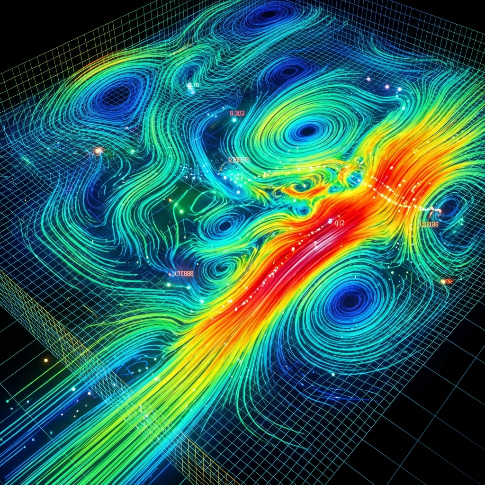

Peer-reviewed journal articles, conference proceedings, and book chapters.

Drag Reduction Using Biomimetic Surfaces
This research investigates nature-inspired surfaces, particularly shark skin riblets, to minimize fluid resistance. Through CFD simulations, we analyzed bionic non-smooth surfaces to reduce skin friction drag and boundary layer thickness, offering significant energy-saving potential for aquatic and aerospace applications.
View Link
Shark Bump Aerodynamic Optimization
This study explores the aerodynamic impact of bio-inspired shark bumps on flat surfaces. Using Ansys Fluent, we predicted performance characteristics, proving that surface customization inspired by marine biology can effectively "sleeve" skin friction and improve high-speed airflow efficiency.
View DetailsElliptical Cargo Containers for Drones
To revolutionize delivery drone efficiency, this project proposes carbon-fiber cargo containers with elliptical profiles. CFD analysis demonstrates that replacing standard rectangular shapes with streamlined geometry significantly reduces air resistance, enhancing speed, stability, and control during logistics operations.
View Details
Sedan Drag & Lift Enhancement
Focused on improving budget passenger car stability, this study analyzes the impact of rear spoilers and vortex generators. Using SolidWorks and CFD, we identified strategies to manage boundary layer separation, successfully reducing drag and lift for safer driving.
Read DOI
Artery Blockage & Bypass CFD Study
This CFD investigation analyzes blood flow and wall shear stress in stenosed arteries. By modeling bypass grafts with the Carreau-Yasuda non-Newtonian scheme, we demonstrated how specific bypass angles stabilize hemodynamics and reduce the risk of further atherosclerosis.
Read DOI
Aerodynamic Control Technique Review
A comprehensive analysis of active and passive flow control techniques. The study evaluates the cost-effectiveness and efficiency of splitter plates, micro-jets, and suction methods, concluding that passive controls offer the most sustainable solution for modern automotive drag reduction.
View DetailsMountain Road Resilience in Kashmir
Addressing harsh climatic challenges in Jammu and Kashmir, this paper identifies innovative maintenance strategies for mountain roads. We propose materials to combat frost, snow drift, and landslides, ensuring durable transportation infrastructure in high-altitude, freezing regions.
View Journal
A new flux-based scheme for compressible flow
Proposal of a new numerical scheme for solving compressible flow equations, focusing on flux accuracy and stability.
View PaperBook Chapter: Advance Numerical Techniques
A comprehensive chapter on advanced numerical techniques applied in engineering and scientific research.